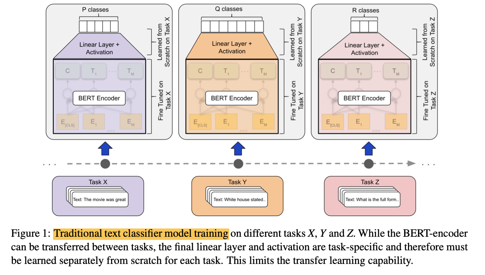

Task-Aware Representation of Sentences for Generic Text Classification
1. Read the title and make an opinion of what’s in the paper (e.g., the area, the task)
Task-Aware Representation of Sentences for Generic Text Classification
This one is easiest for myself to work backwards. Generic Text classification is pretty straightforward. I understand how you would need a representation of that and representing at a sentence level is a sensible choice. Lastly task aware is unclear to me. What would make a model task aware and what exactly does that mean.
2. Read the abstract well and form a hypothesis of
- What’s new in the paper?
- Do you have a clear overview about what the paper is all about?
State-of-the-art approaches for text classification leverage a transformer architecture with a linear layer on top that outputs a class distribution for a given prediction problem.
Yes this is true.
While effective, this approach suffers from conceptual limitations that affect its utility in few-shot or zero-shot transfer learning scenarios.
Ahh, ok, this is a good motivating sentence. I’m assuming that they will take a different approach than a linear layer on top.
First, the number of classes to predict needs to be pre-defined. In a transfer learning setting, in which new classes are added to an already trained classifier, all information contained in a linear layer is therefore discarded, and a new layer is trained from scratch. Second, this approach only learns the semantics of classes implicitly from training examples, as opposed to leveraging the explicit semantic information provided by the natural language names of the classes.
This is essentially a critic of the fine-tuning approach taken by Bert. I’m interested in their solution.
This paper presents a novel formulation of text classification that addresses these limitations.
Emphasis mine. Problem formulation is a non-trivial task.
It imbues the notion of the task at hand into the transformer model itself by factorizing arbitrary classification problems into a generic binary classification problem.
I like where this is going. It reminds me of the negative sampling technique that refactors the softmax function by sampling many binary cases. I’m not sure if that connection is valid, but it seems to follow the same ideation.
3. Look at the images and extract a set of “questions” about what is not clear about their method from the images. Now your job is to answer these questions by reading the paper.

Ok this is a good image because it directly copies Bert’s images.
And they follow it up with an easy to understand figure that demonstrates their approach: embed the framing question into Bert’s input and train a binary classifier. I like it.
They include text like: <"topic politics", "The White House announced that [..]"> as an example input.
This still confuses me. Why are some tasks still so bad? Are they just hard or does the model struggle on certain datasets? I guess I’ll have to find out by reading.
5. Read the method aiming to answer your “questions” about the paper. Focus on understanding only the things relevant for the story (i.e., to understand the contribution).
Our proposed approach therefore reformulates the classification problem as a “query” in which a sentence and a potential class label is given to the transformer which makes a prediction whether or not this label holds.
Ok, this makes a lot of sense now. From the example given, <"topic politics", "The White House announced that [..]"> it shows what the task is “topic politics” and how by adding a <SEP> between inputs, the model can learn to associate labels with semantic meaning.
This method does in fact hold to the negative sampling formulation and is a good way to understand what they are doing.
The core advantage of TARS is that the entire model (encoder and decoder) can be shared across tasks,
This is important if you want to maximize the effective model knowledge that gets transferred from task to task.
6. Read the experiments to convince you that the show results are caused by their claim. Be aware that the experiments highlighted are the best scenarios and are fully hyper-parameter tuned.
We also observe surprisingly powerful zero-shot learning abilities, indicating that TARS indeed learns to interpret the semantics of the label name and is thus able to correctly predict labels for classes without any training data at all.
This is good to see. It provides basic evidence that their approach is generally applicable and is fundamentally “learning” useful, transferable representations.
The below table is quite impressive. They have significant improvement over finetuned BERT with less variation. One question would be how does this compare with next-generation BERTs such as roBERTa and XLM, etc.?
7. Make sure you answered all your questions. Did the authors convince you that their story has the effect that they claim?
Good paper. I’m convinced to try this out and see how it performs on my data.